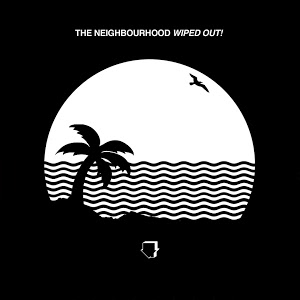
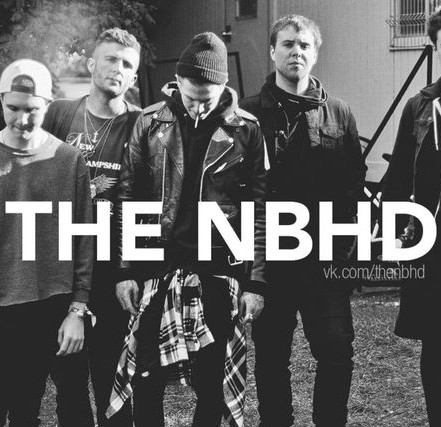
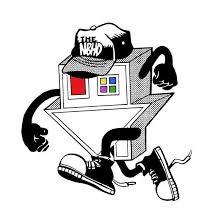
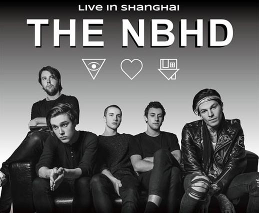
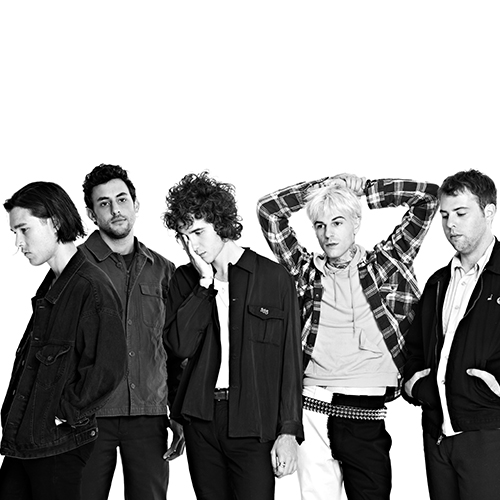
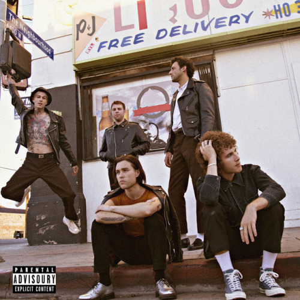

Buy now!!!
New album!
Complete Look at the BAPE x NEIGHBORHOOD x adidas |
The Neighbourhood drops solid hip-hop EP, 'Ever Changing' |
'The Neighbourhood' Is About What It's Like to Be in the Neighbourhood |
| A Bathing Ape (BAPE) and Neighborhood (NBHD) have been pioneers in the Tokyo streetwear scene since 1993 and 1994 respectively. | Carrying arms and legs, the house appears as a living thing sporting sneakers and a hat tagged with “The NBHD.” The band keeps to a steady ... | Whatever it's about, the Neighbourhood, a Californian band that somehow seems English, loves the color-drain. It's even how they brand ... |
Concert is coming! |
It really is a beautiful day in 'The Neighbourhood' |
Jesse Rutherford takes his solo career to next level |
| The Neighbourhood is in Shanghai! Tickets on sale NOW!!! | But what ended up happening to The Neighbourhood, the band behind the song and the perfectly black-and-white artsy Tumblr aesthetic video ... | If you like The NBHD, you'll like Jesse's solo music. He definitely includes some Neighbourhood vibes on songs like “Tunnelovision” and “Girls ... |